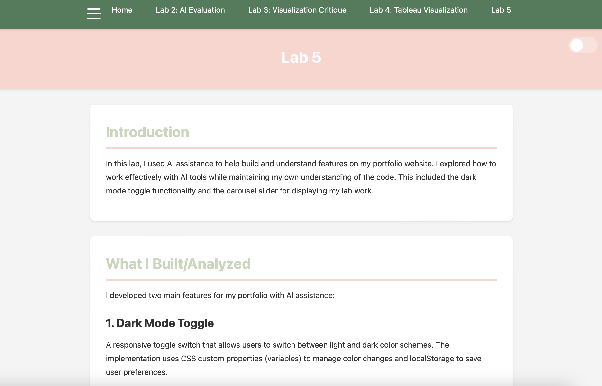

Overview
For Lab 5, I used AI-assisted "vibe coding" to add two new features to my portfolio website. These were features I would not have been able to build from scratch. I used AI to generate initial code, then modified and debugged it to fit my design and layout. From there, I revised, tested, and restyled everything to match my site.
The three main things I built and worked on:
- A dark/light mode toggle
- A carousel on my homepage to display my labs
- Debugging a hamburger menu issue caused by the new features
Feature 1: Dark / Light Mode Toggle
What I Built
For this feature, I added a dark/light mode toggle to the top of my website. When a user clicks it, the website switches themes, and their preference is saved so it stays the same even after refreshing the page. This was not something I would have known how to build on my own. I needed AI to generate the starting structure for me.
The first version AI gave me included emojis and styling that didn't feel like my website at all. It technically worked, but it didn't match my aesthetic. I simplified it into a clean, minimal toggle with a basic on/off mechanism. That change made it feel much more cohesive and aligned with my branding.
What I'm Still Learning
I was still unsure what aria-label and aria-expanded actually did. After looking it up, I realized they are accessibility features. They act as hidden descriptions that help screen readers understand what an element does and whether something (like a menu) is expanded or collapsed. I understand the purpose now, but I would still need to look at examples to confidently implement them again.
Feature 2: Homepage Lab Carousel
What I Built
I also created a carousel on my homepage to display my labs. Each slide now includes a different lab and a photo, which improves both the function and the overall aesthetic of the page.
The first version AI generated technically "worked," but it created six duplicate slides of the same lab stretched across the screen. That obviously didn't make sense for my website. After going back and forth with AI and revising the structure, I fixed the issue so each slide represents a different lab. This part required more troubleshooting than I expected, but it forced me to actually look closely at how the structure was working.
Debugging: Hamburger Menu Issue
While adding these new features, my hamburger icon in the top left corner disappeared. This wasn't something I expected. After troubleshooting, I realized that changes to my CSS and layout were interfering with how it displayed.
I fixed it so the hamburger icon appears on smaller screens and disappears on larger screens where the full navigation bar is already visible. This made the site more responsive and actually improved it beyond how it functioned before.
Here is an example of my understanding of the code — a comment I left in the hamburger menu button:
<button class="hamburger-menu" id="hamburger" aria-label="Toggle menu" aria-expanded="false">
<span></span>
<span></span>
<span></span>
<!-- I know what it does but not how to code it, not sure what aria-label is! -->
</button>My Vibe Coding Guidelines
After completing this lab, I realized that AI is helpful, but only if I use it intentionally. My guidelines are:
- I will use AI to generate starting points for features I haven't learned yet.
- I will try to solve problems myself before immediately asking AI to fix them.
- I will never blindly copy and paste without reading and modifying the code.
- I will clearly document what AI generated and what I changed.
- I won't claim full ownership over something I didn't meaningfully contribute to.
AI can speed up the process, but I am still responsible for understanding what I'm building and making sure it actually works for my website.
Example of My Update
